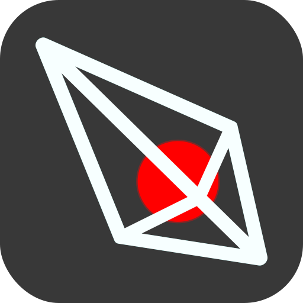

 Arrow
The Narrative Design Tool
Arrow is the free, open-source and feature-rich tool for game narrative design, text-adventure development, and creation of interactive nonlinear storytelling documents in general.
Use Arrow v3.x OnlineExperience best on desktop (~ medium-large screens).


Features
Arrow supports a wide variety of features, from scenes and macros, to variables and characters. It also comes with a rich palette of built-in node types, providing logic, interactive navigation, random data generation, state management, and more.
Free as in Freedom
Arrow is and will remain free, no strings attached.
Absolute ownership of the works you create with Arrow belongs to you.
The source is distributed under
MIT license.
In brief, it means you can freely download, use and modify Arrow.
The project itself is developed using Godot Engine
and few other open resources. For more information on them, take a look at
copyright info.
100% Visual Development
Arrow is designed with authors and artists in mind.
It takes a graph (node-and-link), or no-coding development approach.
Nodes, the most common resources constructing narrative/game-play and logic,
are mainly organized on a grid and connected using graph links,
to form series that define in what order these building blocks will be played.
Advanced Node System
The editor comes with a handy and complete set of built-in node types,
allowing users to quickly design their narrative.
The set is open-source and you can modify or extend it.
Arrow project's Wiki
includes a dedicated page for each of these built-in nodes.
VCS-Friendly Save Files
Arrow uses JSON (text) format for its saved documents.
The format is widely supported by game engines, web, and programming languages.
Resources in Arrow projects are managed under unique identifiers and sorted by creation time,
forming easily manageable blocks (hunks) of data as well.
This structure makes project revision using VCS tools such as Git much easier.
One-Click Playable Export
We can play our games directly in the Arrow editor's Console, to test and debug them. Porting that small part of the source to any programming language, we can create an interpreter and take advantage of Arrow's exports as assets for our games. Following this idea, Arrow utilizes its own bundled Official HTML+JS Runtime to produce playable documents for modern browsers, right from the editor. This means you can export your game as a text adventure with approximately one click!
Support for Distributed Workflows
We can use Arrow's project organization features, to divide a large project to multiple Chapters (files) and have a workspace in which multiple Authors can work on the same document, and even on the same scene with no conflict.
Continuum Safety
Arrow tracks many visible and invisible relations between resources. Under the hood, it knows how resources depend on one another, and performs many checks to eliminate mistakes such as accidentally removing a variable used by different conditional nodes. These tracked relations are also used to automate tasks, such as renaming a resource that is exposed in tens of text nodes.
And ...
More features including:
- CSV (I18n) Export
- RTL, CJK and CTL support
- In-editor Test & Debug Facilities
- Eye-Friendly Dark (& Light) Themes
- Available for All Major Desktop Platforms
- etc.